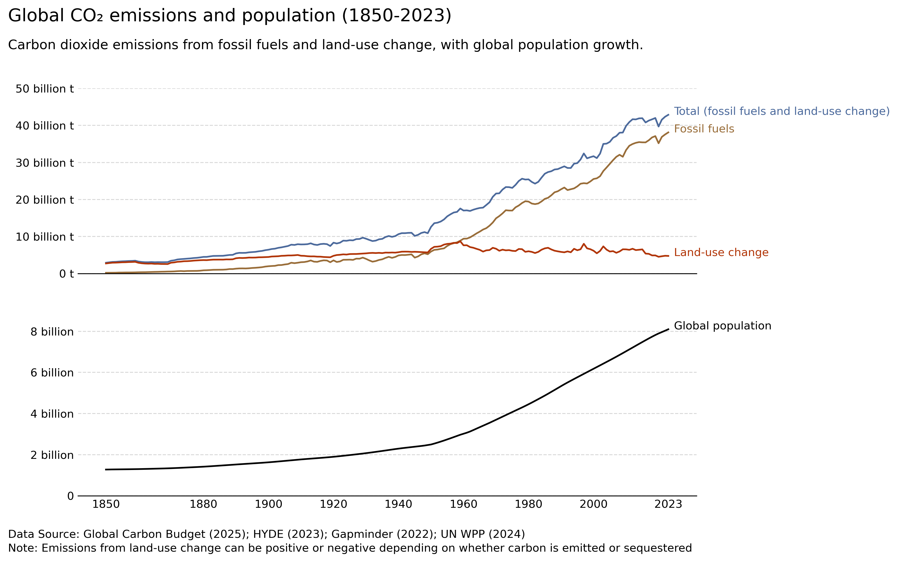

*DJ Khaled voice* another one 2/10/2026

I decided to add population into the mix because it's a clear connection between human's rise in numbers and the subsequent pollution. Just had to separate the 2 graphs with ax and ax2, and then use the same code for the CO2 emissions for the population. I had more trouble making the data card.
Data Card
| Title | Global CO₂ emissions and population (1850-2023) |
| Summary |
This data visualisation shows the global carbon dioxide emissions from fossil fuels and land-use change along with global population growth from 1850 to 2023.
The top panel shows emissions from fossil fuels, land-use change and both combined. The bottom panel shoes global population over the same period. |
| Data Sources |
CO₂ emissions
Andrew, R. M., & Peters, G. P. (2025). The Global Carbon Project’s fossil CO2 emissions dataset. Zenodo. Retrieved October 2, 2026, from https://doi.org/10.5281/zenodo.17417124 Population Kees, K. G. (2023). History database of the global environment 3.3 - data publication platform of Utrecht University. Yoda.Uu.Nl. Retrieved October 2, 2026, from https://doi.org/DOI:10.24416/UU01-AEZZIT GD003. (n.d.). GapMinder. Retrieved October 2, 2026, from https://www.gapminder.org/data/documentation/gd003/ United Nations. (2024). World population prospects. Un.Org. Retrieved October 2, 2026, from https://population.un.org/wpp/downloads?folder=Standard%20Projections&group=Most%20used |
| Mapping |
Shared x-axis: year
Top panel y-axis: annual CO₂ emissions (tonnes per year) Bottom panel y-axis: Global population, people Blue: Total (fossil fuels and land-use change) Brown: Fossil fuels Orange: Land-use change Black: Population |
| Important Notes |
Emissions from land-use change can be positive or negative depending on whether carbon is emitted or sequestered.
Population data is comprised of multiple sources, with heavy processing done by Our World in Data. They talk about it here: https://ourworldindata.org/population-sources Population.csv only goes up to the year 2023, while CO2.csv goes up to the year 2024. |
| Access |
CO₂ emissions
https://ourworldindata.org/grapher/co2-fossil-plus-land-use?overlay=download-data Population https://ourworldindata.org/grapher/population?time=1850..2023&country=~OWID_WRL&overlay=download-data |